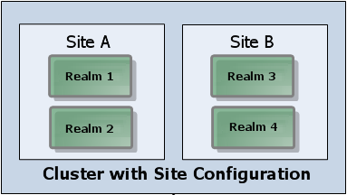

Disaster Recovery using Clusters with Sites
Disaster recovery situations can be managed by using sites in Universal Messaging. In these situations, provided that 50% of the nodes are online, it is possible for the cluster to remain operational.
A cluster with sites allows a standard cluster to operate with as little as 50% of the active cluster members (as opposed to the standard 51% quorum in effect for clusters without sites), and provides administrators with a mechanism to prevent the split brain scenario that would otherwise be introduced when using exactly half of a cluster's realms.
When using sites, you should always segregate a cluster into exactly two sites. Each site within the cluster should have exactly the same number of nodes present. You also define one of the sites to be the primary site. Note that Universal Messaging does not support selecting the master among the realms of the primary site. If the master node is stopped, it is not guaranteed that the new master node will be a node from the primаry site.
In the sample scenario below, the instructions for disaster recovery using sites assume a 4-node cluster split across two sites: Site A and Site B. Site A is initially the prime site.
Disaster Recovery when the Non-Prime site is lost
When the non-prime site is lost, Universal Messaging will automatically ensure that the cluster is formed with the prime site. The administrator of the system does not need to undertake any action and the cluster will continue to function as normal, providing that at least 50% of the nodes are online to establish a quorum.
When the realms within the non-prime site are brought back online, they will rejoin the cluster and continue to function as normal.
Disaster Recovery when the Prime site is lost
When the prime site is lost, Universal Messaging will not automatically reform the cluster. This is to ensure that a split-brain scenario, where both sites continue to operate independently of each other with conflicting state, does not occur.
Instead the administrator of the system must switch the prime site of the Universal Messaging cluster manually to allow the cluster to reform.
The steps to do this are:
1. Shut down all members of the former prime site (Site A).
2. Change the value of the prime site to the non-prime site (Site B).
3. Observe that a quorum has been achieved using members of new prime site (Site B) only.
When the realms within the former prime site (Site A) are ready to be brought back online, there are additional steps to ensure that they rejoin the existing cluster correctly:
1. Bring each member of the former prime site (Site A) up individually.
2. Ensure that each member joins the new cluster as a slave and acknowledges the change in the prime site flag before bringing up further members of the cluster.
3. Once all members of the cluster are online, ensure that a quorum is achieved and each node agrees on the master and prime site.
It is important that these instructions are carried out exactly to ensure that only one cluster remains active at any one point in time. Situations where two prime sites exist at the same time may cause 2 separate clusters to form. In these situations it is difficult for these nodes to resynchronize and agree state.
For information on how to perform these steps, see the following topics in the section Cluster Administration of the documentation of the Enterprise Manager: